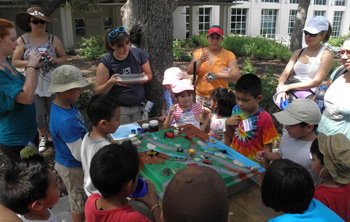
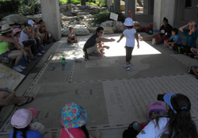
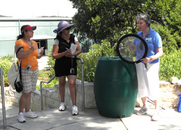
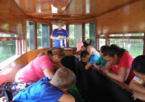
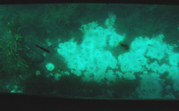
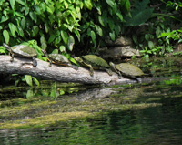
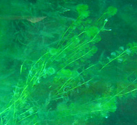
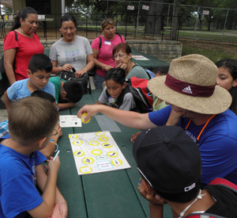

Advocacy Outreach
200 Depot Street,
P. O. Box 169, Elgin,
Texas 78621
Phone 512 281-4180
FAX 512 281-9599
Even Start Summer Program 2012
Water, Water Everywhere!!
http://takepart.com/lastcall ~ A look at our present water situation
~ Page 1 ~
Water is everywhere upon our planet. It is the same water as the dinosaurs drank, for there is no new water; it all just moves in natural cycles which clean and distribute the water to our lakes and rivers and waters our plant life. Nearly 97% of the world’s water is ocean water which is salty which we do not drink. About 2% of earth’s water is locked up in ice caps and glaciers. That leaves us only 1% for all humanities needs, including all human agricultural needs, residential, manufacturing, community and personal needs.
Our summer program focus was about Water; we studied the water cycles, what happens to water moving in our watersheds which feed in to our aquifers and springs. We reviewed different recycling and water treatments options, how water gets polluted and how we can help keep our most valued resource clean. The outings focused upon tactile and visual activities which brings new information to the students.
Parents attended their ESL classes with instructors Yadira Lira (beginning) and Carol Joseph (intermediate), or attended the GED class with instructors Michelle Austino and Kristy Taylor, while the children attended the Camp (ages 5-16) with instructors Jerretta Jimmerson, Carolyn Thompson, Clara Godkin, Haley Kuba and Michael Thompson-Rhodes. The infants, toddlers and up to 5 year olds enjoyed their time in our Early Childhood Development Center with Ethel Ellis and Debra Hendricks.
On our outings we visited the LCRA Redbud Center and enjoyed many displays. They provided us with a Watershed activity that showed how easily pollutants and garbage can move in to our waterways during rain.
With a large map of Texas embedded in the walkway that defined the Highland lakes, our guide led us through activities explaining the movement of the Colorado River all the way to the Gulf of Mexico at Matagorda.

One area of the LCRA Redbud teaching areas was developed to be a showcase of drought resistant plants. Children walked through the garden to discover the variety of plants and their usefulness. Our guide talked to us about catching rainwater as well.

The camp then took a trip to the Aquarena Center in San Marcos. We all boarded the glass bottom boats and looked in the water for fish, turtles various plant life and the actual spring water bubbling up from the sandy bottom.

The water was so very clear and cool. Our guide took us to the roof of their building and challenged us to show how much water goes in each container. The containers were labeled rivers, oceans, lakes, and other places. This was to see if we knew how much water was really available for humans, which was not very much at all!


Our guide took us down to an area that had containers of micro organisms that were present in this spring water lake. The children could scoop out a few and look at them close up with magnifying glasses and identify the types using charts.
Later we gathered around a picnic table and charted which organism ate which other organism. This chart got very complicated with many lines going to all varieties.

We discovered that if some species died out, then others that depended upon them would also die out. Life in the water was all connected. We later played a game involving the Water Cycle, moving about to different places water traveled during its natural cycle. The guides at Aquarena were very informative and provided us with some great learning opportunities.
Page 1 ~ Page 2 ~ Page 3 ~ Next page >>